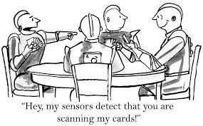

Artificial Intelligence is a rapidly growing industry even though it's very influental and helps human being in many ways, it can be harmful if not developed properly.
Definition of AI
From Wikipedia, Artificial intelligence (AI) is intelligence exhibited by machines. In computer science, an ideal "intelligent" machine is a flexible rational agent that perceives its environment and takes actions that maximize its chance of success at some goal
Colloquially, artificial intelligence" is applied when a machine mimics "cognitive" functions that humans associate with other human minds.Such as "learning" and "problem solving", as machines become increasingly capable, mental facilities once thought to require intelligence are removed from the definition. For example, optical character recognition is no longer perceived as an exemplar of "artificial intelligence", having become a routine technology.Capabilities currently classified as AI include successfully understanding human speech,competing at a high level in strategic game systems (such as Chess and Go), self-driving cars, and interpreting complex data. Some people also consider AI a danger to humanity if it progresses unabatedly.AI research is divided into subfields that focus on specific problems or on specific approaches or on the use of a particular tool or towards satisfying particular applications.
Historical Approaches of AI
Artificial Intelligence is the subfield of Computer Science major provided by many universities, which is a study of principles and use of computers. There are different recognized historical approaches of AI :
Thinking Humanly - this definition seems imposible beacuse an AI need to have such a consciousness to be able to fit this term.By the time an AI has a consciousness it might be safe to named it artificial superintelligence
Acting Humanly(the Turing test approach) - In 1950, Alan Turing designed an experiment to test if it's capable to deceive its interrogartor through a teletype.If the interrogator couldn't differentiate humans to computers,then the computer had passed the Turing test.
Thinking Rationally (the laws of thought approach) - There are 2 problems in this definition :
There's huge difference between capability to solve a theoritical problems and real world problems
It's not easy to develop an informal knowledge(less than 100% certainity) and declare it in formal term (logical notation).
Acting Rationally (the rational agent approach) - With logical reasoning, it's possible to get a conclusion whether an action will reach it's goal or not
 artificial intelligence" is applied when a machine mimics "cognitive" functions that humans associate with other human minds.Such as "learning" and "problem solving", as machines become increasingly capable, mental facilities once thought to require intelligence are removed from the definition. For example, optical character recognition is no longer perceived as an exemplar of "artificial intelligence", having become a routine technology.Capabilities currently classified as AI include successfully understanding human speech,competing at a high level in strategic game systems (such as Chess and Go), self-driving cars, and interpreting complex data. Some people also consider AI a danger to humanity if it progresses unabatedly.AI research is divided into subfields that focus on specific problems or on specific approaches or on the use of a particular tool or towards satisfying particular applications.
artificial intelligence" is applied when a machine mimics "cognitive" functions that humans associate with other human minds.Such as "learning" and "problem solving", as machines become increasingly capable, mental facilities once thought to require intelligence are removed from the definition. For example, optical character recognition is no longer perceived as an exemplar of "artificial intelligence", having become a routine technology.Capabilities currently classified as AI include successfully understanding human speech,competing at a high level in strategic game systems (such as Chess and Go), self-driving cars, and interpreting complex data. Some people also consider AI a danger to humanity if it progresses unabatedly.AI research is divided into subfields that focus on specific problems or on specific approaches or on the use of a particular tool or towards satisfying particular applications.